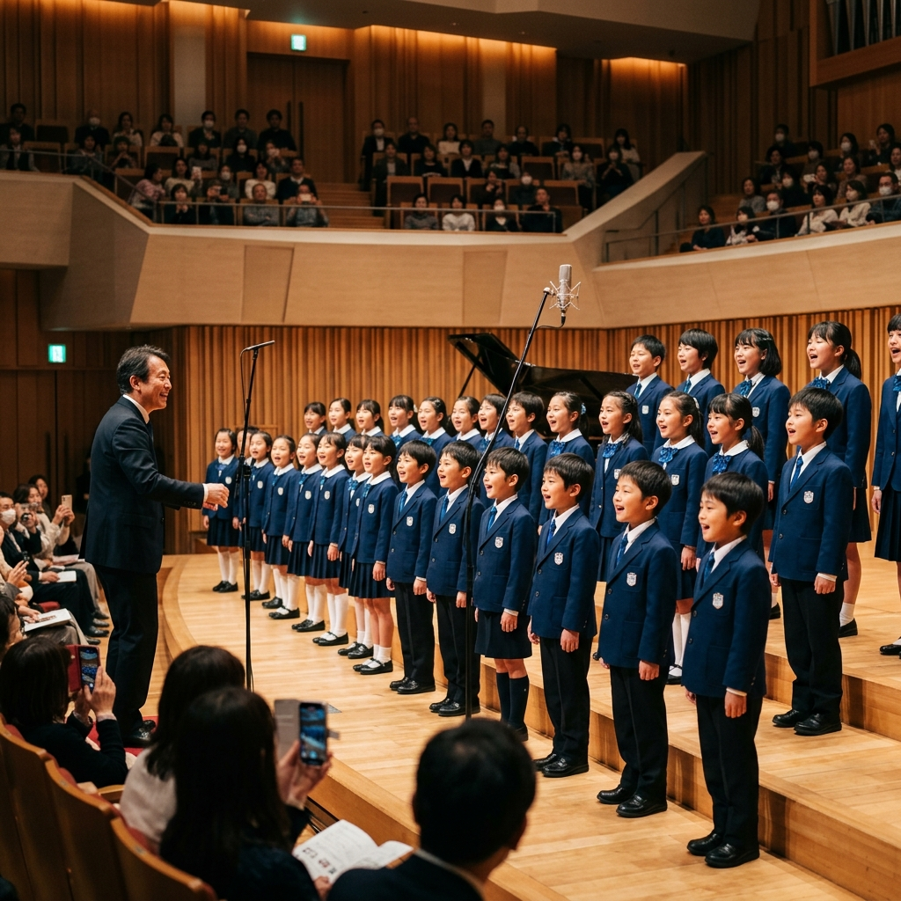

歌うよろこびを、仲間とともにつむぐ。
「グラントワ・ユース・コール」は、島根県芸術文化センター「グラントワ」（島根県益田市）を拠点に活動する、子どもたちのための合唱団です。
1997年に「益田市ジュニア合唱団」として設立されて以来、地域に根ざした活動を続けてきました。2010年には現在の名称へと変更し、グラントワのフランチャイズ芸術団体としてさらにステップアップし、地域の芸術文化育成と発展に貢献しています。

小学生から中学生まで幅広い年齢の団員が在籍し、地元音楽関係者の丁寧な指導のもと、月に2回程度グラントワの練習室に集まって歌の練習を行っています。
グラントワの大ホールでの定期公演をはじめ、地域イベントへの出演や、病院でのロビーコンサートなど、日々の練習の成果を発表する様々なステージに立っています。
学校や学年を超えた子どもたちが、「歌うこと」を通じて一つの音楽を創り上げる喜びを分かち合います。生涯の思い出となる絆が生まれます。
グラントワ・ユース・コールでは、一緒に楽しく歌う仲間をいつでも大募集しています。
歌うことが大好きな小・中学生の皆さん、無料体験や見学も可能です。保護者の方々もお気軽にお問い合わせください。
日々の練習風景や出演情報は公式Instagramで公開中です！
公式Instagramを見る